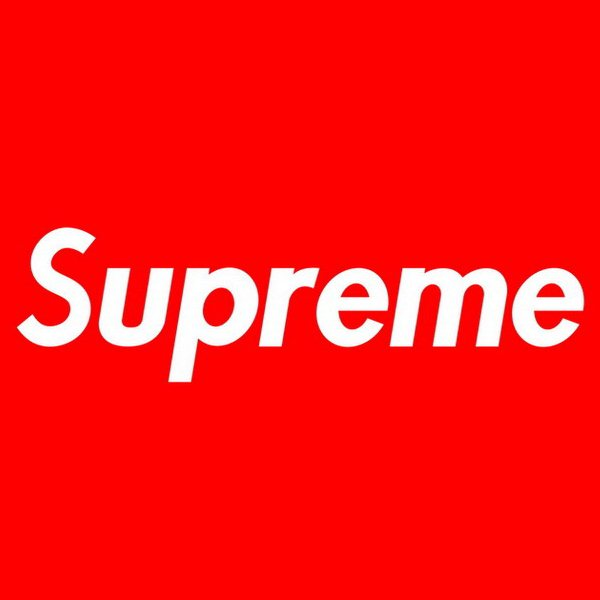
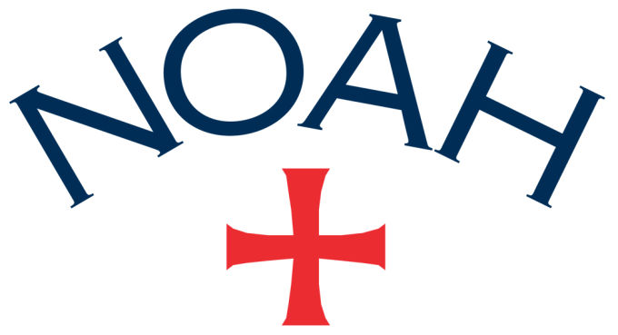

Before the Philly rock band could make thier best album. Brendan Lukens had to face some inner demons.
Luckily, he didn't have to do it alone.
Click Here To Listen to The Latest Tracks from Modern Baseball| Brand Name | Brand Logo | Biography |
|---|---|---|
| Supreme |  | Supreme is a skateboarding shop/clothing brand established in New York City in April 1994. The brand was originally founded by James Jebbia. Although he was born in the US, he lived in England from until he was nineteen.The first Supreme store opened on Lafayette Street in downtown Manhattan in 1994. It was designed with skaters in mind, with a unique design on the store layout; the clothes arranged around the outside of the store with a large space in the middle. This meant that skaters with backpacks on could skate right into the store, and still feel comfortable. In 2004, a store was opened on North Fairfax Ave in Los Angeles, California, which is almost double the size of the original New York store and also includes an indoor skate bowl.[6] There are other stores in Paris, London, Tokyo (Harajuku, Daikanyama & Shibuya), Nagoya, Osaka, and Fukuoka.These modern stores still try to emulate the original Lafayette Street store design. |
| Noah |  | Noah is an American-based retailer of men’s clothing, focused mainly on upmarket multi-utilitarian attire and embellishments. Established by Brendon Babenzien in New York in 2015, Noah is cross-generational bridging youth culture and classic culture. Our name was born out of a deep reverence for the aquatic sphere, while at the same time, serving as a nod to the last of the pre-flood Patriarchs. Our motif is derived from the iconic Knights Templar cross, which not only connects the brand to its maritime roots, but further exemplifies Noah’s commitment to and belief in the virtue of the outlaw. |
The sweet, earthy smell of cloves fills Daniel Caesar’s family home. It’s helping mask the slight odor that sea buckthorn berries give off when they’re cooked down. Daniel’s mom, Hollace—a chatty, generous woman devoted to veganism and natural remedies—foraged the sunset-orange berries herself, and today she’s using them to make juice.
Continued on Page 2